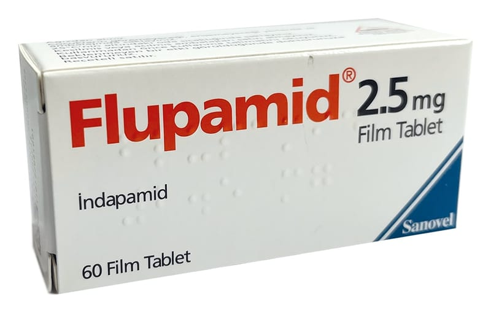

Flupamid 2.5 mg Film Kaplı Tablet, 30 Tablet

Ne için kullanılır
KT · Bölüm 1FLUPAMİD çentiksiz, pembe renkli, yuvarlak şekilli tablettir. 30 ve 60 tabletlik bl ister ambalajlarda sunulmaktadır. FLUPAMİD esansiyel hipertansiyon teda visi için doktorunuz tarafından reçetelenmiştir. Yüksek ka n basıncını (hipertansiyon) düşürmeye yarayan bir ilaçtır ve “indapamid” atkif maddesini içerir. “İndapamid” diüretikdir. Pek çok diüretik böbreklerde oluşan idrar miktarını arttırır. Ancak indapamid biraz farklıdır. Çünkü böbreklerde oluşan idrar miktarını çok az a rttırmaktadır.